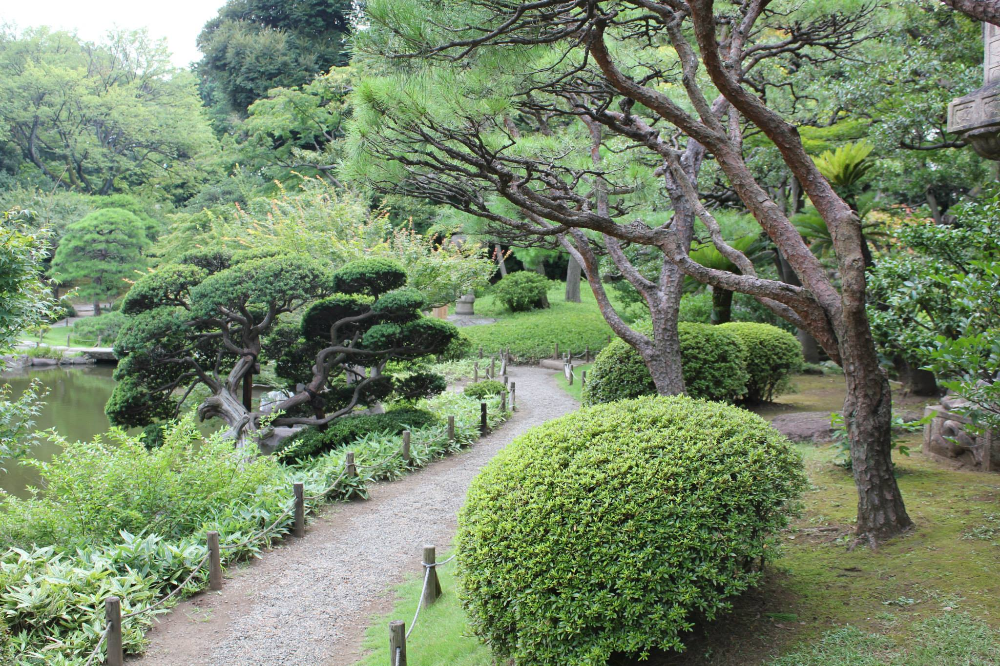

Suuria kaupunkeja, sympaattisia temppeleitä ja kauniita puutarhoja
Se mikä tekee Japanista mielestäni niin hienon on se että sieltä löytyy kaikkea; uutta ja vanhaa, perinteistä ja modernia. Robotteja, geishoja, zen-puutarhoja, vilkkuvia neonvaloja ja olkikattoisia minka taloja.
Paikkoja on niin paljon että matkaa suunnitellessa hankalinta on päättää mihin kaikkialle haluaa päästä käymään. Omat matkani ovat toistaiseksi keskittyneet Honshun alueelle, joka sijaitsee Japanin keskellä. Vaikka paikkoja on niin paljon joista valita, koen olevani niin ihastunut niihin joissa olen jo käynyt, että haluan palata aina takaisin näihin samoihin paikkoihin.

Yleiskatsaus Japanin maantietoon
Japani on pitkänomainen saarivaltio Itä-Aasiassa. Se koostuu yli 3000 saaresta, joista merkittävimmät pohjoisimmasta eteläisimpään ovat Hokkaido, Honshu, Shikoku ja Kyushu. Japanin pohjoisin kohta sijaitsee leveyspiirillä 45° ja eteläisin leveyspiirillä 24°. Tämä tarkoittaa sitä että Pohjois-Japanissa pääsee nauttimaan lumesta ja laskettelusta kun taas eteläisimmillä Japanin saarilla voi käydä uimassa kilpikonnien kanssa ja katsomassa koralliriuttoja.
Japani on aikoinaan muodostunut mannerlaattojen liikkeiden seurauksena ja sijaitseekin mannerlaattojen saumakohdalla Tyynenmeren tulirenkaaksi kutsutulla alueella. Tämä aiheuttaa Japanin alueella usein eri voimakkuuksellisia maanjäristyksiä sekä satunnaisia tsunameja ja tulivuorenpurkauksia.